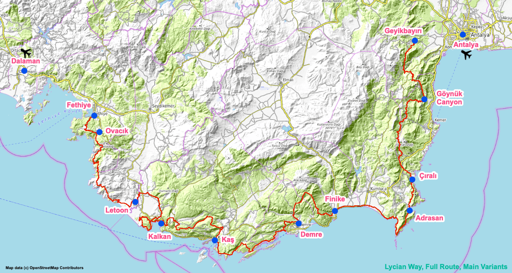

Activities
Outdoor Adventures

- Lycian Way Hiking: A marked long-distance hiking route stretching approximately 540 kilometers between Muğla (Fethiye) and Antalya (Geyikbayırı). It connects more than 20 ancient Lycian cities on the Teke Peninsula. The terrain, equipped with red-and-white international marking systems, mostly consists of rocky trails, forest paths, and steep slopes.
- Scuba Diving in Kaş: Offers high underwater visibility averaging 30-40 meters. There are over 30 official dive sites including the Flying Fish Reef, Canyon, sunken C-47 Dakota cargo plane, and various shipwrecks. The underwater topography consists of amphora remains, sea caves, and limestone reefs.
- Rafting in Köprülü Canyon: Conducted on a 14-kilometer course on the Köprüçay River. According to river difficulty classification (Class I-VI), it features level 1 and 2 (low-medium) rapids. Because it is fed by karstic underground sources, the water temperature remains around 9-12°C year-round.
- Olympos Cable Car to Tahtalı Mountain: An aerial transport system reaching the 2,365-meter summit of Tahtalı Mountain in Kemer district. With a line length of 4,350 meters, it is one of the longest cable cars in Europe. It provides a vertical transition from red pine forest level to alpine meadows and the rocky summit zone in approximately 10 minutes.